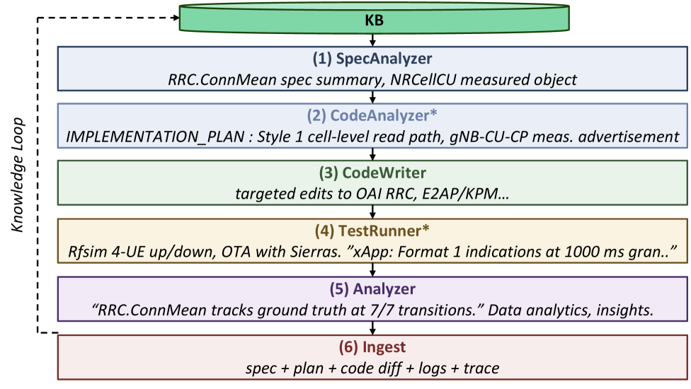
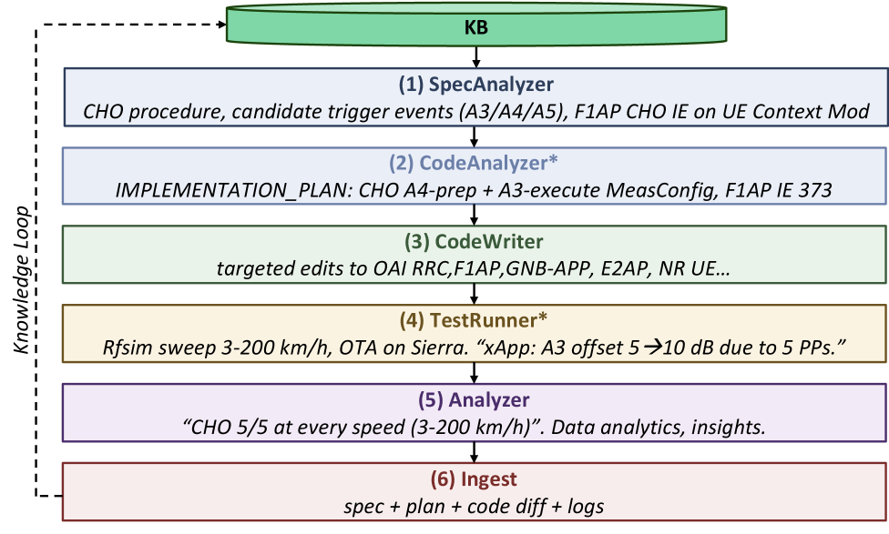
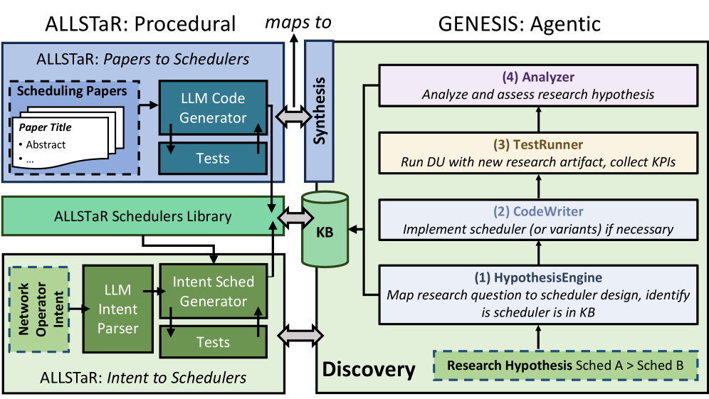

![Figure 1: Genesis architecture, organized as four horizontal layers tied together by the Synapse knowledge plane and a pluggable LLM backend. A single intent (a specification clause, a KPI anomaly, or a research hypothesis) enters at the top. The agentic framework routes it through one of six capability pipelines ( Synthesize , Test , Harden , Optimize , Discover , Secure ), composed at run-time from a pool of agent specialists (DevOps, RAN, Radio, UE, Testbed, Emulation, among others). The deterministic execution layer hosts ∼ \sim 23 parameterized skills ( build , run , configure , deploy , experiment , … \ldots ) and hooks for observability, policy gates, and audit. The substrate layer provides a three-tier validation continuum from RFSIM through emulation (Colosseum with hardware-in-the-loop) to OTA deployment on production-grade testbeds (X5G, Arena). Synapse serves as both source of ground truth (3GPP/O-RAN specs via hybrid retrieval) and recipient of every artifact each run produces (traces, logs, code diffs with spec-to-code traceability). LLM instances are pluggable, mixing commercial cloud models (e.g., Claude Opus 4.7, Sonnet 4.6) with open-weight models served locally (e.g., gpt-oss, Llama 4, Phi, Gemma). The whole system runs as a closed loop in which the testbed and the knowledge plane co-evolve with the agentic framework.](figures/1313/fig_001.png)
![Figure 8: Logical architecture of the end-to-end CHO use case. Solid boxes (left) mark baseline OAI 2026.w21 components. Dashed boxes (right) mark modules synthesized by Genesis . Components marked by an asterisk are contributed by OAI MR !3879 and not part of the 2026.w21 baseline. The additions span three layers: a UE -side conditional- reconfiguration cache with an A4 evaluator, a CU -side CHO state machine that emits the F1AP CHO ASN.1 sequence and exposes new E2SM-RC POLICY/INSERT Style 3 endpoints, and a FlexRIC-hosted anti-ping-pong xApp that closes the loop over E2.](figures/1313/fig_007.png)
GENESIS proposes an agentic AI framework that converts intents (spec clauses, telemetry anomalies, research hypotheses) into solutions validated with over-the-air experiments, addressing the critical gap of LLM hallucination and simulation-to-reality transfer in RAN R&D.
本文提出了GENESIS，一个基于智能体的AI框架，能够将意图（如规范条款、遥测异常、研究假设）自动转化为经过真实无线环境验证的解决方案。它通过三个可组合原语（智能体、技能、钩子）和持久化知识层（SYNAPSE），在从仿真到真实硬件部署的全链条上实现了100%的新功能实现成功率，解决了LLM幻觉和仿真到现实迁移的关键难题。
Deep Note — genesis
Key Takeaways - GENESIS is an agentic AI framework that automates the full 6G RAN R&D lifecycle from specification to over-the-air validation. - It achieves 100% success rate in implementing new stack features, while baseline Claude Code with Opus 4.7 consistently fails. - The framework uses three composable primitives (agents, skills, hooks) and a knowledge layer (SYNAPSE) for ground truth and artifact persistence. - Six agentic pipelines cover synthesize, test, harden, optimize, discover, and secure network functions. - Validation spans a three-tier continuum from simulator to emulation (Colosseum) to over-the-air (OTA) deployment on production-grade testbeds.
0) Metadata
- Title: GENESIS: Harnessing AI Agents for Autonomous 6G RAN Synthesis, Research, and Testing
- Alias: genesis
- Authors: Tamerlan Aghayev, Maxime Elkael, Michele Polese, Minh Dat Nguyen, Gabriele Gemmi, Andrea Lacava, Ali Saeizadeh, Reshma Prasad, Paolo Testolina, Angelo Feraudo, Soumendra Nanda, Pedram Johari, Salvatore D'Oro, Tommaso Melodia
- arXiv ID: 2605.27360
- Published:
- Links:
- Abs: https://arxiv.org/abs/2605.27360
- HTML: https://arxiv.org/html/2605.27360v1
- PDF: https://arxiv.org/pdf/2605.27360
- Tags: agentic-ai, 6g-ran, over-the-air-validation, llm-for-networks, autonomous-rd
- Domains: system_safety
- Rating: 5/5 (base 1 + quality 2 + observation 2)
1) Why-read
GENESIS proposes an agentic AI framework that converts intents (spec clauses, telemetry anomalies, research hypotheses) into solutions validated with over-the-air experiments, addressing the critical gap of LLM hallucination and simulation-to-reality transfer in RAN R&D.
2) CRGP
C — Context
Cellular R&D is throttled by six structural processes that each consume months of manual engineering work per iteration. While LLMs have accelerated general software engineering, they hallucinate APIs and mis-read specifications, killing RAN interoperability, and rely on simulations that break on real hardware.
R — Related work
- Multi-agent frameworks (AutoGen, MetaGPT, CrewAI, Claude Code) show strong results on SWE-bench but fail on RAN engineering due to API hallucination and specification misinterpretation.
- Traditional RAN R&D cycles average 74 days (90th percentile: 207 days) for a feature from first code change to stable merge.
- O-RAN and RICs were intended to bypass vendor lock-in, but production stacks expose limited telemetry and control, constraining AI optimization.
- LLM-based code generation for networking has been explored, but not with closed-loop over-the-air validation.
G — Gap
Existing LLM agents hallucinate RAN-specific APIs and misinterpret 3GPP specifications, producing code that may compile or run in simulation but fails on real hardware and multi-vendor interfaces. There is no existing framework that autonomously validates generated RAN code through a closed loop of over-the-air experiments and persistent knowledge accumulation.
P — Proposal
GENESIS is an agentic AI framework built on three composable primitives (agents, skills, hooks) and a knowledge layer (SYNAPSE) that serves as both ground truth source and artifact repository. It routes intents through six capability pipelines (synthesize, test, harden, optimize, discover, secure) and validates outputs across a three-tier continuum from RFSIM through emulation (Colosseum) to over-the-air deployment on production-grade testbeds (X5G, Arena).
---
4) Experiments
Main results
Across multiple statistically independent experiments, GENESIS achieves 100% success rate in implementing new stack features, while baseline Claude Code with Opus 4.7 consistently fails at each attempt. Three case studies are presented: (i) synthesizing and testing 3GPP RRC.ConnMean KPM, (ii) synthesizing, testing, and hardening Conditional Handover with closed-loop xApp over E2SM-RC, and (iii) researching new RAN scheduling variants from hypothesis through code, integration, and comparison with state of the art.
Ablation
The paper profiles token utilization and cost across different LLMs (Claude Opus 4.7, Sonnet 4.6, gpt-oss, Llama 4, Phi, Gemma) but does not report a dedicated ablation study isolating individual components.
Limitations
["The framework's performance is demonstrated on a specific set of testbeds and LLMs; generalization to other RAN stacks and commercial models is not fully explored.", 'Token utilization and cost profiling is provided but no detailed ablation on the contribution of each primitive (agents, skills, hooks) is reported.', 'The 100% success rate is based on a limited number of experiments; scalability to more complex, multi-vendor scenarios remains to be validated.']
5) Why it matters
- Directly addresses the simulation-to-reality gap that plagues RAN research, offering a pathway to validate AI-generated code on real hardware.
- The persistent knowledge layer (SYNAPSE) enables compounding capabilities across runs, which is crucial for long-term autonomous R&D.
- Relevant to researchers working on O-RAN, 5G/6G prototyping, and AI-for-networks, as it provides a concrete framework for closed-loop experimentation.
- Demonstrates that agentic AI can overcome LLM hallucination in a high-stakes domain (telecom standards) through deterministic execution and real-world feedback.
6) Next steps
- [ ] Evaluate GENESIS on multi-vendor RAN stacks and commercial 5G deployments to test interoperability.
- [ ] Perform ablation studies to quantify the contribution of each primitive (agents, skills, hooks) and the knowledge layer.
- [ ] Extend the framework to cover more 3GPP features and security vulnerabilities (e.g., fuzzing, adversarial attacks).
- [ ] Integrate with open-source RAN projects (e.g., OpenAirInterface, srsRAN) to broaden the user base.
- [ ] Explore cost-accuracy trade-offs by benchmarking more open-weight LLMs on the same RAN tasks.
7) Scoring
5/5 = base 1 + quality 2 + observation 2
GENESIS：利用AI智能体实现自主6G RAN合成、研究与测试
主要结论 - GENESIS是一个智能体AI框架，可自动化6G RAN研发全生命周期，从规范到空中接口验证。 - 在实现新协议栈功能时，GENESIS达到100%成功率，而基线Claude Code with Opus 4.7始终失败。 - 框架使用三个可组合原语（智能体、技能、钩子）和一个知识层（SYNAPSE）来保证事实正确性和工件持久化。 - 六条智能体流水线覆盖网络功能的合成、测试、加固、优化、发现和安全。 - 验证跨越从仿真器到仿真平台（Colosseum）再到生产级测试床空中接口部署的三级连续体。
1) 阅读理由
GENESIS提出了一个智能体AI框架，将意图转化为经过空中接口实验验证的解决方案，解决了RAN研发中LLM幻觉和仿真到现实迁移的关键空白。
2) CRGP（背景 / 相关工作 / 差距 / 方案）
背景：蜂窝网络研发受限于六个结构性流程，每个迭代周期需耗费数月人工工程。虽然LLM加速了通用软件工程，但它们会幻觉API并误读规范，破坏RAN互操作性，且依赖在真实硬件上失效的仿真。
相关工作：多智能体框架（AutoGen、MetaGPT、CrewAI、Claude Code）在SWE-bench上表现强劲，但因API幻觉和规范误解在RAN工程中失败。传统RAN研发周期平均74天（90百分位：207天）。O-RAN和RIC旨在绕过供应商锁定，但生产栈暴露的遥测和控制有限。基于LLM的网络代码生成已有探索，但未实现闭环空中接口验证。
空白：现有LLM智能体幻觉RAN特定API并误解3GPP规范，生成的代码可能在仿真中编译运行，但在真实硬件和多供应商接口上失败。目前没有框架能通过空中接口实验的闭环和持久知识积累来自动验证生成的RAN代码。
方案：GENESIS是一个基于三个可组合原语（智能体、技能、钩子）和知识层（SYNAPSE，既作为事实来源又作为工件仓库）的智能体AI框架。它将意图路由到六条能力流水线（合成、测试、加固、优化、发现、安全），并通过从RFSIM经仿真平台（Colosseum）到生产级测试床（X5G、Arena）空中接口部署的三级连续体验证输出。
3) 实验
在多个统计独立的实验中，GENESIS在实现新协议栈功能时达到100%成功率，而基线Claude Code with Opus 4.7每次尝试均失败。论文展示了三个案例研究：(i) 合成并测试3GPP RRC.ConnMean KPM；(ii) 合成、测试并加固条件切换，通过E2SM-RC实现闭环xApp；(iii) 从假设到代码、集成并与最新技术比较，研究新的RAN调度变体。
消融实验
论文分析了不同LLM（Claude Opus 4.7、Sonnet 4.6、gpt-oss、Llama 4、Phi、Gemma）的令牌利用和成本，但未报告专门针对单个组件的消融研究。
局限性
['框架的性能仅在特定测试床和LLM上展示；尚未充分探索对其他RAN栈和商业模型的泛化能力。', '提供了令牌利用和成本分析，但未报告每个原语（智能体、技能、钩子）贡献的详细消融。', '100%成功率基于有限数量的实验；在更复杂的多供应商场景中的可扩展性仍有待验证。']
4) 重要性
- 直接解决了困扰RAN研究的仿真到现实鸿沟，为在真实硬件上验证AI生成代码提供了途径。
- 持久知识层（SYNAPSE）使跨运行的能力累积成为可能，这对长期自主研发至关重要。
- 对从事O-RAN、5G/6G原型设计和AI-for-networks的研究人员具有参考价值，因为它提供了一个闭环实验的具体框架。
- 证明了在电信标准这一高风险领域，通过确定性执行和真实世界反馈，智能体AI可以克服LLM幻觉。
5) 下一步
- [ ] 在多供应商RAN栈和商业5G部署上评估GENESIS，以测试互操作性。
- [ ] 进行消融研究，量化每个原语（智能体、技能、钩子）和知识层的贡献。
- [ ] 扩展框架以覆盖更多3GPP特性和安全漏洞（例如模糊测试、对抗攻击）。
- [ ] 与开源RAN项目（如OpenAirInterface、srsRAN）集成，以扩大用户基础。
- [ ] 通过在相同RAN任务上基准测试更多开放权重LLM，探索成本-准确性权衡。


